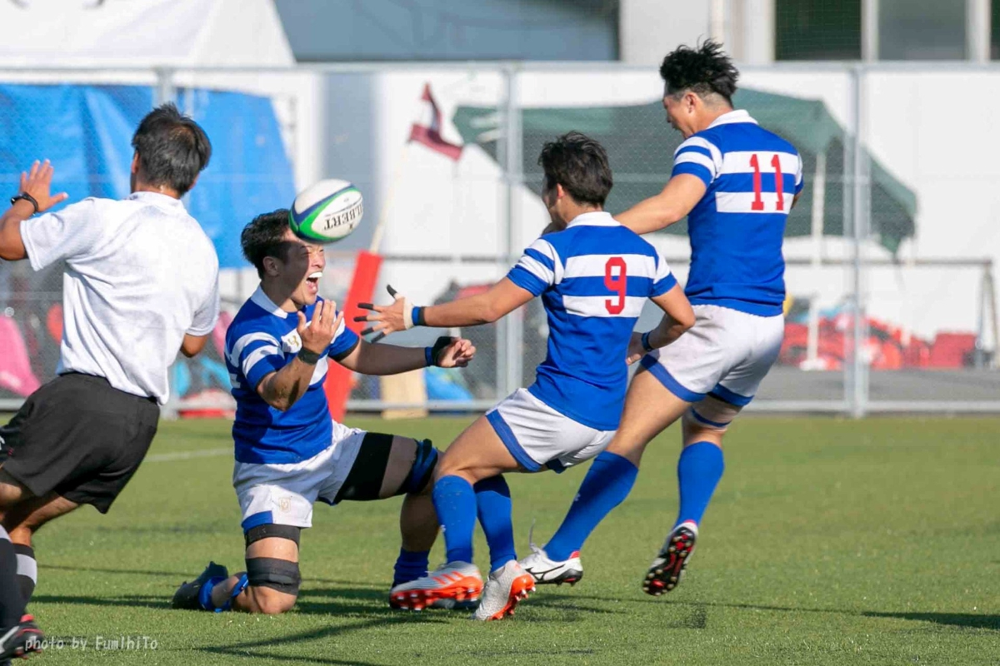

2017年福岡工業大学工学部電子情報工学科入学．一般入学でラグビー部に所属し，在学中に大学選手権にレギュラーとして出場．
2020年の第57回全国大学ラグビーフットボール選手権大会の3回戦まで進出する．ラグビーでの就職のオファーを受けるが度重なる怪我により断念．
2021年福岡工業大学工学部電子情報工学科盧研究室に在籍し，
画像処理の研究を行う．同年，論文「C#言語とAForge.NETによるPCWebカメラ映像による顔認識」を発表．
2022年NSW株式会社に新卒でシステムエンジニアとして入社．ネットワークやデータベースの業務を行う．その傍ら個人でWeb開発やシステム開発を行う．